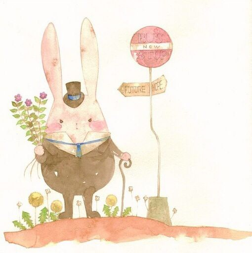

路上已经有很多行人了
早点摊有很多种类的食物
不过我已经没有吃早餐的习惯了
这是一个坏习惯
我应该慢慢去改掉它
我在看逻辑思维
等我看完它
寄给你看
早上起来有些晚了
便快点跑了起来到公司8点5分了
我明天7天起最好了
对了忘记告诉你
昨天一件搞笑的事情
那就是叶路阳的签名
保护内心的小男孩
跟妈妈玩的开心点
今天撒了一个小谎
嗯
因为我还在被窝里呢
昨天很开心的解决了一些问题
持续进步吧
耶
很傻叉的表情
现在已经8点了
我好像习惯了晚上晚点走
头有点晕晕的呢
晚安啊月月
今天跟月月聊了好长时间
很开心
晚上跑了会步
还是好好的看编程视频
晚安吧
今天我明白一个道理
要对自己好一点
身体都吃不消的话
还谈什么理想
早安
路上已经有很多行人了
早点摊有很多种类的食物
不过我已经没有吃早餐的习惯了
这是一个坏习惯
我应该慢慢去改掉它
我在看逻辑思维
等我看完它
今天又闹别扭了
我也有点生气
一生气
你
便
不见了

活很多
也没跟你怎么说话
零食买了呢
路上已经有很多行人了
早点摊有很多种类的食物
不过我已经没有吃早餐的习惯了
这是一个坏习惯
我应该慢慢去改掉它
我在看逻辑思维
等我看完它
寄给你看
今天跟小月月聊天真好
每次跟你说话就好开心
心情很高兴
喜欢你的新新
爱你不是坚持
已经成为了一种
习惯
今天都4号了呢
小月月今天又去了科室
看着你开心
我就莫名的
心情好了起来
明天你不在
我会想你的
今天月月在家看书呢
新新都没有怎么跟月月聊天
月月在看大冰的书
我也很喜欢呢
明天见
小祖宗
晚安
今天小月月玩游戏破纪录了呢
好开心
我们说了很多小时候的事呢
晚安
好开心
今天我也说了伤人的话
月月肯定伤心透了
对此我感觉很糟糕
月月不管发生什么事
我都不会
放弃的
月月今天很伤心很难过
而我不知道怎么安慰你
只能不停的给你发信息安慰你
我很怕
我跟你说话
你不听
而我却不知道怎么把你逗笑
反正你难过
我陪你
今天和小月月玩游戏呢
很开心
真好
和月月一块玩游戏最开心了
我们两个在一起
真是再好不过的事
今天贪吃蛇记录被月月打破了呢
决定给月月一个奖励
嗯
月月说的是
新新又说话不算数
看行动吧
我好像最近
颓废了呢
今天月月很烦躁呢
看着你这样
我也很不开心
今天跟朋友去喝酒
现在很困很累
不知道说什么
好像今天说了很多
现在想到你
很开心
另外
好撑啊
今天决定做一个东西
来承载我的日记
只想送给亲爱的你
漆月
我爱你
今天组长不在
一天都很闲
我已经迈出了一步了
晚上跟月月玩了消消乐
我们10连胜呢
真是一件令人开心的事
今天有点高兴呢
和月月聊天最开心了
今天月月吃到零食了
月月吃了巧克力的
好喜欢你吃巧克力呢
今天跟月月说了很多关于精神方面的事
我也说
以后想娶你
说了很多以后的想法
我很希望它们
都可以实现
嗯
看了几集夏洛克读了几页书
幻想着以后我也可以成为一个
很厉害
很厉害的人
至少
看起来
今天平安夜
吃着苹果
哇
真甜啊
不过我有点想你
真希望
能跟你在一块
今天平安夜
吃着苹果
哇
真甜啊
不过我有点想你
真希望
能跟你在一块
今天平安夜
吃着苹果
哇
真甜啊
不过我有点想你
真希望
能跟你在一块
今天平安夜
吃着苹果
哇
真甜啊
不过我有点想你
真希望
能跟你在一块
今天平安夜
吃着苹果
哇
真甜啊
不过我有点想你
真希望
能跟你在一块
今天平安夜
吃着苹果
哇
真甜啊
不过我有点想你
真希望
能跟你在一块
今天平安夜
吃着苹果
哇
真甜啊
不过我有点想你
真希望
能跟你在一块